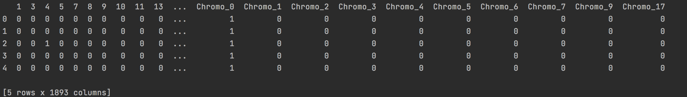
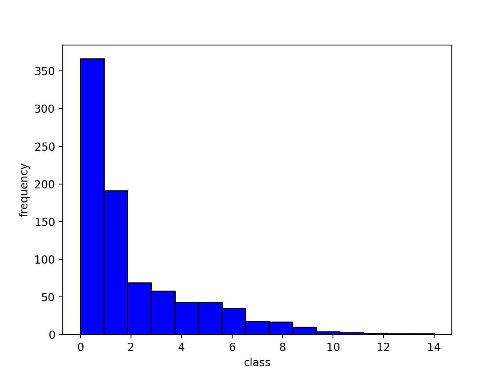
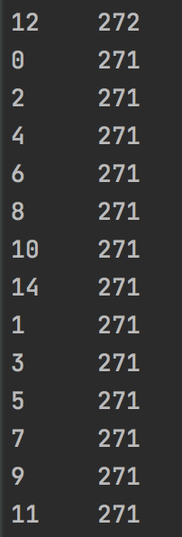
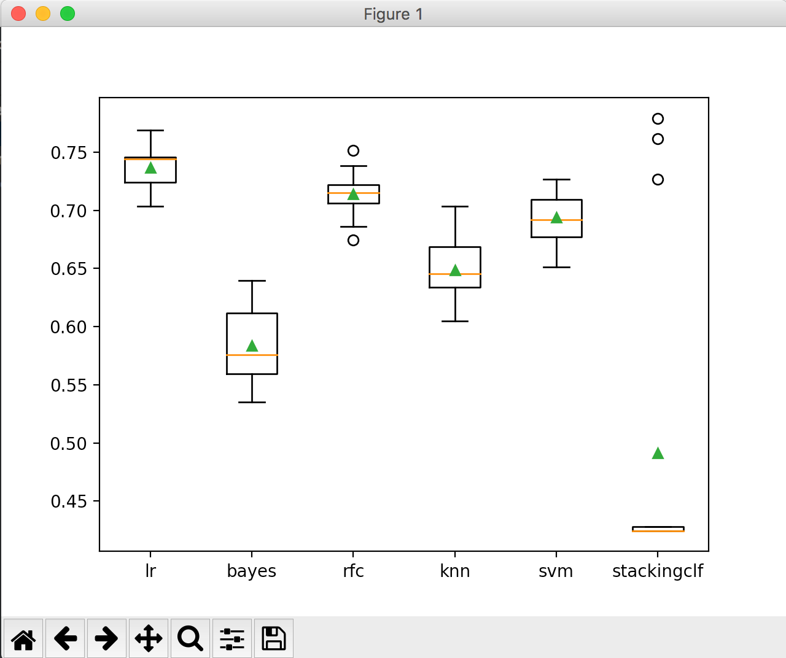

- Drop all columns with only NaNs
- Fill NaN with medium for numeric columns
- Fill NaN with the most frequent value for categorical columns
- Encode yes/no to 1/0 for columns(Class, Complex, Phenotype, Motif)
- Apply one-hot encoding for columns(Essential, Interaction, Chromosome)
- Drop columns which contain only one distinct value
Now the dataset only consist with 1/0, by printing the first few columns, the dataset looks like
By plotting the histogram of the label, we see that the dataset is highly imbalanced.
Thus our next step is to resample the dataset.
- Since class 11, 12, 14 only have 1, 2, 1 data, we use oversample to generate data for class 11, 12, 14
- We use SMOTE to generate new and synthetic data for class 0-10
We plot the label, we see each class has 271 data. Now we are good to apply algorithms.
> Here I will apply
- Random Forest Classifier
- K-Nearest Neighbor Classifier
- Support Vector Machine
- Gradient Boosting Machines
- XGBoost
Hyperparameters:
- Number of trees in random forest
- Number of features to consider at every split
- Maximum number of levels in tree
- Minimum number of samples required to split a node
- Minimum number of samples required at each leaf node
I corss validated the hyperparameter grid and obtained the following parameter values that maximizes the Testing accuracy score
{'n_estimators': 700, 'min_samples_split': 10, 'min_samples_leaf': 2, 'max_features': 'sqrt', 'max_depth': 60}
Training dataset accuracy score: 0.9728590250329381
Testing dataset accuracy score: 0.7222222222222222
Hyperparameters:
- Weights
- Number of neighbors
- Power parameter for the Minkowski metric
After Grid Search Cross Validation, the tuned hyperparameter values and accuracy scores are
{'n_neighbors': 2, 'p': 1, 'weights': 'distance'}
Training dataset accuracy score: 0.9994729907773386
Testing dataset accuracy score: 0.6759259259259259
Hyperparameters:
- C
- gamma
After Grid Search Cross Validation, the tuned hyperparameter values and accuracy scores are
{'C': 10, 'gamma': 0.1, 'kernel': 'rbf'}
Training dataset accuracy score: 0.9989459815546772
Testing dataset accuracy score: 0.7175925925925926
Hyperparameters:
- Learning Rate
- Number of estimators
Gradient Boosting algorithm took so long to run that I have to terminate the program.
The reason can be found here
Hyperparameters:
- Learning Rate
- Maximum tree depth
- Gamma
- Lambda
After Grid Search Cross Validation, the tuned hyperparameter values and accuracy scores are
{'max_depth': 6, 'lambda': 0.5, 'gamma': 5, 'eta': 0.5}
Training dataset accuracy score: 0.9675889328063241
Testing dataset accuracy score: 0.6944444444444444
The StackingClassifier is defined by first choosing 5 base models, then defining the Logistic Regression metal model to combine the predictions obtained from the base models using 5-fold cross-validation. Here I chose 5 base models to be Logistic Regression, Naive Bayes, Random Forest, KNN, and SVC. After evaluating the models using cross-validation, the box plot of the accuracy scores looks like

From the boxplot, we see Logistic Regression performed the best on the data. The next one is Random Forest Classifier, as we
found previously. We see StackingClassfier performed weirdly here. Some records showed a pretty high prediction, while
some are low. I think it might due to the high imbalance of the data.
We see that Random Forest algorithm gave the highest prediction accuracy score.
This is probably because Decision Tree performs well on imbalanced data.
I also have high expectation on XGBoost algorithm. Since XGBoost also takes super long to run,
I tuned hyperparameters only based on 2 iterations. I believe the score will be higher with more trials on hyperparameters.
- https://towardsdatascience.com/feature-engineering-for-machine-learning-3a5e293a5114
- https://towardsdatascience.com/methods-for-dealing-with-imbalanced-data-5b761be45a18
- https://towardsdatascience.com/understanding-random-forest-58381e0602d2
- https://towardsdatascience.com/hyperparameter-tuning-the-random-forest-in-python-using-scikit-learn-28d2aa77dd74
- https://medium.com/@ODSC/optimizing-hyperparameters-for-random-forest-algorithms-in-scikit-learn-d60b7aa07ead
- https://medium.com/analytics-vidhya/evaluating-a-random-forest-model-9d165595ad56
- https://towardsdatascience.com/knn-in-python-835643e2fb53
- https://www.datasciencelearner.com/gradient-boosting-hyperparameters-tuning/
- https://machinelearningmastery.com/gentle-introduction-gradient-boosting-algorithm-machine-learning/
- https://xgboost.readthedocs.io/en/latest/parameter.html
- https://www.analyticsvidhya.com/blog/2016/03/complete-guide-parameter-tuning-xgboost-with-codes-python/